Scorecard: Checks of the synthetic data
Andrew Stein
Source:vignettes/avatar-scorecard.Rmd
avatar-scorecard.RmdYou have generated a synthetic dataset. Should you use it? The
scorecard, generated by synpmx_scorecard() helps assess
this and this Vignette explains it.
The scorecard
The scorecard contains a table of the following items:
- The check of the dataset that is performed.
- That data is read (source data, synthetic data, or both)
- The resulting calculation from the check
- A verdict for whether the check passed, failed or needs review
- An
explorefunction to help assess any checks that failed or need review.
Its rows are grouped into four categories, one per question:
- A. Is the dataset valid
- B. Is any individual patient identifiable based on the synthetic data
- C. Has the synthetic study design significantly changed from the source
- D. How much have the covariate and observation distributions changed
Every row the card holds has a section of this vignette under the same identifier.
Seven checks can say FAIL, and no
others. A1, because the output is not a legal dataset; A3 and
A6, because it is not the study that went in; and B1a, B1b, B4a and B4b,
because each means one real patient’s structure was reproduced verbatim.
No other row can fail. The rest answer pass when there is
nothing to read and review when there is something whose
meaning depends on the study: a subject dropped for want of donors, an
arm that changed size, a statistic wandering at a small sample size. One
row, D1, is review however it lands, because no threshold
on it would be honest.
The two datasets used here
mad <- as.data.frame(get(utils::data(list = "mad", package = "xgxr")))
mad_roles <- pmx_roles(
id = "ID", time = "TIME", dv = "LIDV", amt = "AMT", evid = "EVID",
cmt = "CMT", dvid = "NAME", mdv = "MDV", nominal_time = "NOMTIME",
strata = c("TRTACT", "DOSE"),
covariates = c("WEIGHTB", "SEX")
)
mad_synth <- suppressWarnings(synpmx_avatar(mad, mad_roles, seed = 909))
data("pheno_sd", package = "nlmixr2data")
pheno_roles <- pmx_roles(
id = "ID", time = "TIME", dv = "DV", amt = "AMT", evid = "EVID",
covariates = c("WT", "APGR")
)
pheno_synth <- suppressWarnings(
synpmx_avatar(pheno_sd, pheno_roles, seed = 1010)
)xgxr::mad is the worked example: 60 subjects in a
multiple-ascending-dose study, six arms of ten (placebo and five dose
levels), a declared nominal time, a baseline weight and a sex, and
five endpoints keyed by NAME — a
pharmacokinetic (PK) concentration, a continuous pharmacodynamic (PD)
effect, and PD endpoints that are ordinal, count and binary. It is
shaped like a real study report, and most of these checks pass on
it.
Five endpoints and a categorical covariate are why it is the example here. On a study with one continuous endpoint and no category, A6 and B5 both report that there was nothing to ask, A3 compares a set of size one against itself, and C3 asks each arm about one endpoint.
nlmixr2data::pheno_sd is 59 real neonates given
phenobarbital in routine clinical care, and it is here because
no check on it fails while its dosing history is visibly
shortened: the median infant received twelve doses and the
median avatar receives five.
The scorecard, computed
mad_card <- synpmx_scorecard(mad, mad_synth, mad_roles)
synpmx_scorecard_datatable(mad_card)Nothing fails. The rest of this vignette is what each check asks and
why its pass criterion is what it is, using mad where a
check passes and pheno_sd for further exploration.
Each section below opens with its own rows of this card, so the check
being discussed is on the screen with the discussion. The card is a
data.frame and that is all those tables are — a row subset
of it, in the form shown under A5a and A5b.
A. Is the dataset valid
A1, A2. Are the synthetic and source data legal PMX datasets
A1 runs validate_pmx() on the synthetic table and A2
runs the same function on the source. Both must be TRUE.
The check is structural: schema and column classes, event grammar, time
monotonicity within subject, censoring flags against their dependent
variable (DV), infusion start/stop pairing, baseline
covariates that are actually constant, and strata that do not vary
within a subject.
validate_pmx(mad_synth, mad_roles)$valid
#> [1] TRUE
mad_roles_cens <- pmx_roles(
id = "ID", time = "TIME", dv = "LIDV", amt = "AMT", evid = "EVID",
cmt = "CMT", dvid = "NAME", mdv = "MDV", nominal_time = "NOMTIME",
cens = "CENS", strata = c("TRTACT", "DOSE"),
covariates = c("WEIGHTB", "SEX")
)
validate_pmx(mad, mad_roles_cens)$valid
#> [1] FALSEThat study’s CENS column is meaningful only for the PK
concentration, and all five endpoints share the one LIDV
column, so the flag lands on the four PD endpoints as well. None of them
is a concentration with a lower assay limit: on the ordinal endpoint a
row flagged as below the limit of quantification (BLOQ) reports a
severity of 2 while uncensored rows go down to 1, and the continuous,
count and binary endpoints each do the same. Declaring cens
here would produce a coherent-looking dataset with nonsense censoring on
four endpoints out of five; leave it undeclared, or restrict the flag to
the rows it describes. A2 is review rather than
pass in that situation: a real study a validator objects to
is a normal thing to have, and the objection has to be read rather than
scored.
Time after dose (TAD)
tad is an output, not an input.
synpmx_avatar() recomputes it from the generated times and
dose rows and overwrites whatever the source held. Declaring the role
says which column to overwrite and carry through. The source values are
read in one place only, validate_pmx() on the source:
A3. Did every endpoint survive
A3 compares the set of dvid levels observed in the
source against the set observed in the output. They must be equal, and a
missing endpoint is a FAIL: it is not the study that went
in.
setequal(
unique(as.character(mad$NAME)),
unique(as.character(mad_synth$NAME))
)
#> [1] TRUEIt is a set comparison rather than a row count, because row counts
stay plausible while a whole endpoint disappears. That is also why five
endpoints are worth having in the example: A3 reads 5 of 5
here, and on a one-endpoint study the check can only ever say that the
one endpoint is still there.
A4. Did the strata (cohort) size survive
A4 counts distinct subjects on strata. Equal is a pass. Fewer is
review rather than FAIL, because
on_donor_shortfall = "drop" removes a subject that could
not be built from enough donors, and declining to build on a patient the
generator cannot protect is the correct answer. It lands on whichever
stratum was thinnest, so a small cohort is where it shows up: a stratum
holding a single patient can legitimately come back empty.
A5a, A5b. Did the number of observations and doses survive
A5a and A5b are rows per patient, split by event type: observations
in one, dose events in the other. Each passes when the synthetic count
lands within 5% of the source’s — that much movement leaves each patient
carrying the same amount of information, and there is nothing to decide.
Further than that is review and never FAIL,
because the number is permitted to move: a shortened dose course can be
the correct answer, as the rest of this section shows.
On mad neither moves — 61.7 observations and 5 doses per
patient on both sides, a fixed protocol grid coming through intact, so
both pass. pheno_sd is where they move, and the card is a
data.frame, so a section of it is an ordinary row
subset:
pheno_card <- synpmx_scorecard(pheno_sd, pheno_synth, pheno_roles)
synpmx_scorecard_datatable(pheno_card[pheno_card$check %in% c("A5a", "A5b"), ])Observations are near-intact at 2.63 against 2.51 per patient —
inside the 5%, so A5a passes — while dosing falls from 9.98 to 5.63 and
A5b asks to be read. This occurs from synpmx_avatar()
trying to infer a nominal time grid.
doses_per_patient <- function(data) {
as.numeric(table(data$ID[data$EVID != 0]))
}
summary(doses_per_patient(pheno_sd))
#> Min. 1st Qu. Median Mean 3rd Qu. Max.
#> 1.000 7.000 12.000 9.983 13.000 15.000
summary(doses_per_patient(pheno_synth))
#> Min. 1st Qu. Median Mean 3rd Qu. Max.
#> 1.000 3.000 5.000 5.627 8.500 11.000The median real infant received twelve doses. The median avatar
receives five. plot_pmx_schedule() draws it, one row per
patient, a grey tick for each dose and a coloured dot for each
observation:
plot_pmx_schedule(pheno_sd, pheno_roles, main = "pheno_sd, source")
plot_pmx_schedule(pheno_synth, pheno_roles, main = "pheno_sd, synthetic")
Nothing is invalid here. No infant’s complete schedule can be reused — 55 of 59 are held by one patient — but most infants open the same way, twelve-hourly from time zero, so each avatar’s course is cut back to the deepest opening several infants share. That is about half the doses. Whether half a course is enough is exactly the judgement A5b exists to prompt, and it depends on what the dataset is for: enough to develop a fitting workflow, not enough to characterise the tail of an individualised regimen. Section B1 is the other half of the story, where the privacy checks read 0, and A5b is what says at what price.
If it were important to more accurately capture the dosing
information, a nominal time grid could be specified by the user, rather
than computed by synpmx_avatar(), as shown in Evaluating
AVATAR on public data for the nimoData example.
A6. Did a discrete endpoint stay discrete
A6 asks whether every generated value on a binary, ordinal or count
endpoint is one the source could have held. It is on every card. Where a
study has no discrete endpoint the result reads
no discrete endpoint and passes, which is the true answer
rather than a silently absent row.
Blending is a weighted mean, so a weighted mean of several patients’ zeros and ones is a number between them, and a 0/1 endpoint comes back continuous unless the generated values are put back on the scale the source used. The subject and residual noise terms then carry it off the level set entirely. Ask what kind of values each endpoint takes before reading anything else about it:
pmx_endpoint_types(mad, mad_roles)| endpoint | type | levels | decided_by | reason |
|---|---|---|---|---|
| PD - Binary | binary | 0, 1 | inferred | every observed value is 0 or 1 |
| PD - Continuous | continuous | – | inferred | not every observed value is a whole number |
| PD - Count | integer | – | inferred | 20 whole-number levels, from 0 to 19 |
| PD - Ordinal | ordinal | 1, 2, 3 | inferred | 3 whole-number levels: 1, 2, 3 |
| PK Concentration | continuous | – | inferred | not every observed value is a whole number |
Three of mad’s five endpoints are discrete, and
LIDV is one numeric column carrying all five, so restoring
the column’s class restores nothing about any of them.
synpmx_avatar() decides per endpoint and snaps the
generated values back: binary and ordinal onto the source’s levels,
count to whole numbers. A6 reads the finished table rather than trusting
that:
discrete <- c("PD - Binary", "PD - Count", "PD - Ordinal")
values_taken <- function(data, endpoint) {
values <- data$LIDV[data$NAME == endpoint & data$EVID == 0]
sprintf("%d distinct, %.2f to %.2f", length(unique(values)),
min(values), max(values))
}
knitr::kable(data.frame(
endpoint = discrete,
source = vapply(discrete, values_taken, character(1), data = mad),
synthetic = vapply(discrete, values_taken, character(1), data = mad_synth),
row.names = NULL
))| endpoint | source | synthetic |
|---|---|---|
| PD - Binary | 2 distinct, 0.00 to 1.00 | 2 distinct, 0.00 to 1.00 |
| PD - Count | 20 distinct, 0.00 to 19.00 | 16 distinct, 0.00 to 15.00 |
| PD - Ordinal | 3 distinct, 1.00 to 3.00 | 3 distinct, 1.00 to 3.00 |
A6 asks whether every generated value is one the source could have held, not whether every source value came back. The count endpoint loses its four highest levels — 20 distinct values become 16, topping out at 15 rather than 19 — and passes, because 16 whole numbers inside the source’s range are all values this endpoint takes. A single generated 2.4 would fail the check. The lost tail is a D1 question about the distribution.
The observation type is inferred from the source — whether every
observed value is a whole number, and how many distinct ones there are —
and pmx_roles(endpoint_types = ) overrides it where that
inference reads the study wrongly.
B. Is any individual patient identifiable based on the synthetic data
B1a, B1b. Does any avatar carry one real patient’s schedule
Who was observed when, and who was dosed when, is the axis most specific to longitudinal data, and the one a general-purpose synthetic-data tool will not have addressed. Two patterns per avatar are checked:
- B1a, the set of visits it attends.
- B1b, the times it is dosed at.
Either is a FAIL above 0. An avatar may
carry a pattern only if at least min_pattern_share real
patients shared it — 2 by default, set in synpmx_avatar(),
and the same floor B4a, B4b and B5 use. One avatar carrying a pattern
only one real patient had could be identifying.
The run measures both as it builds and records the answer, so the card reads them from the run rather than from the finished table:
guarantees <- function(synthetic, label) {
settings <- attr(synthetic, "pmx_settings")
data.frame(
dataset = label,
identifying_visit_sets = settings$identifying_visit_sets,
identifying_dose_schedules = settings$identifying_dose_schedules
)
}
knitr::kable(rbind(
guarantees(mad_synth, "mad"),
guarantees(pheno_synth, "pheno_sd")
))| dataset | identifying_visit_sets | identifying_dose_schedules |
|---|---|---|
| mad | 0 | 0 |
| pheno_sd | 0 | 0 |
Passing is not the same as being fine, which is what
pheno_sd is here to show. Its infants are dosed
individually, so 55 of 59 have a dose schedule nobody else shares. A
dose cannot be moved without inventing a regimen the protocol never
allowed, so the only way to 0 was to stop each avatar’s dosing early, at
a depth several infants passed through — 10 doses per patient down to
5.6. Read B1a and B1b next to A5b, which is where that
price is reported.
Where strata are declared the two are decided arm by
arm, since an avatar is never moved out of the arm it was anchored in,
and the result cell names the arm that failed, with an example shown
below.
B1b Avatars with a dose schedule nobody else shares 6 in ARM8 (6) FAILAsking before you generate
Both checks can be further explored.
unmaskable_strata(source, roles) answers the related
question in advance, naming the arms whose patients no method could
mask; an arm with safe_anchors = 0 fails on every seed.
skeleton_uniqueness() is the cohort-wide version, read on
the coarsened visit grid.
skeleton_uniqueness(mad, mad_roles, coarsen_time = TRUE)Schedule-uniqueness screen. Scored AFTER coarsening,
on the shared visit grid synpmx_avatar() builds. These are
the numbers a run reports.
Every patient shares their observation schedule with somebody. Nothing to do.
This is a property of the SOURCE, and nothing in generation can lower
it. What generation controls is whether an avatar ends up with one of
these schedules – that is pmx_masking_report()’s “avatars
keeping their anchor’s own visit set”, which should be near 0% however
high the count above is.
| Patients whose … | n | % of cohort | Meaning |
|---|---|---|---|
| Observation schedule nobody else has | 0 | 0 | the headline: an avatar anchored here has one real patient’s schedule |
| … a one-off observation time | 0 | 0 | sampled when nobody else was. A time grid can absorb
this: declare nominal_time
|
| … the set of visits attended | 0 | 0 | every time is shared. A missed visit, a discontinuation, or follow-up that has not reached the later visits. No grid touches this |
| Observation count nobody else has | 0 | 0 | survives any grid; the residual
flag_identifiable_subjects() looks at |
| Dosing nobody else has | 0 | 0 | dose amounts and gaps. Weight-based dosing makes this near-universal |
How crowded is each schedule (1 = nobody else has it):
| Patients sharing that schedule | Patients | % of cohort |
|---|---|---|
| 10 | 10 | 17 |
| 50 | 50 | 83 |
Which endpoint is doing it. A schedule is only as shared as
its least shared part.
| endpoint | patients | distinct visit sets | patients alone on theirs |
|---|---|---|---|
| PD - Binary | 60 | 1 | 0 |
| PD - Continuous | 60 | 1 | 0 |
| PD - Count | 60 | 1 | 0 |
| PD - Ordinal | 60 | 1 | 0 |
| PK Concentration | 50 | 1 | 0 |
One row per patient is in the returned data frame;
plot_pmx_schedule() draws the same cohort. Source-derived;
not releasable unless separately public or privately budgeted.
Every row of the above tables are zero. The dataset mad
declares a nominal_time, so subjects snap onto the
protocol’s own grid and two schedules cover the cohort — one for the 50
subjects who contribute PK, one for the ten placebo subjects who do not.
Where a row is not 0, the screen’s own tables say which endpoint drives
it, and nearest_set_diff in the returned data frame says
how far each patient is from their nearest neighbour, since one missing
sample counts the same as an ad-hoc schedule in the headline count.
B2. Does any synthetic patient stand out from its own stratum
B2 is about singling out a synthetic patient based on a record so conspicuous in the released table that it is the one that might help identify an outlying patient. Nothing else in section B asks it — B1 and B4 ask whether a real pattern was reproduced exactly, B3 asks an aggregate question — and B2 is also one of only two rows that read the synthetic table alone, so whoever receives the data can run it without the source.
Each patient is screened on four axes: follow-up length, dose count,
dose magnitude and peak DV. A patient is flagged on an axis
when both hold:
- It is a robust outlier — a modified z above 3.5, the Iglewicz–Hoaglin cutoff, measuring its distance from its stratum’s median in units of that stratum’s median absolute deviation.
- It is materially alone: at least
min_relative_gapof the stratum’s median away from the nearest other patient. The default is 1, a separation larger than the group’s whole median value. It is set against ordinary between-subject variability rather than against any one cohort — a 30–50% coefficient of variation is unremarkable on a PK parameter, so anything smaller is inside the study’s own noise and could not be picked out of it.
sum(flag_identifiable_subjects(mad_synth, mad_roles)$flagged)
#> [1] 0
sum(flag_identifiable_subjects(mad_synth, mad_roles,
min_relative_gap = 0)$flagged)
#> [1] 6What to look for. A synthetic patient followed three
times as long as anybody else, a patient given twice their arm’s dose, a
patient with Cmax well above everyone else’s in that cohort.
The row is a list of records to read so 0 is a pass.
Anything above 0 is review and never a FAIL,
because the right count is not necessarily 0 — a study can hold a
patient who is genuinely unusual, and an anchor-based generator will
hand that patient’s shape to an avatar.
What a hit looks like. No synthetic dataset in the
public-data
evaluation reports anybody, so the example has to come from a source
table. nlmixr2data::wbcSim is a cohort whose follow-up ends
by 672 hours, with three exceptions:
data("wbcSim", package = "nlmixr2data")
wbc_roles <- pmx_roles(id = "ID", time = "TIME", dv = "DV", amt = "AMT",
evid = "EVID", cmt = "CMT")
wbc_flags <- flag_identifiable_subjects(wbcSim, wbc_roles)
as.data.frame(wbc_flags)[wbc_flags$flagged, ]
#> subject_id follow_up_time n_doses max_dose max_dv
#> 1 33 4580 6 137 4.1
#> 2 44 1730 2 141 5.8
#> outlier_axes flagged
#> 1 follow-up time, number of doses TRUE
#> 2 follow-up time TRUETwo patients, followed to 1730 and 4580 hours. The third, at 1130, is
not reported: its nearest neighbour is at 672, and 458 hours is just
under the cohort’s median follow-up of 480. That is the line the default
draws, and where you want it drawn is a study-level decision —
min_relative_gap = 0.5 adds the merely striking, and 0
gives you the modified z alone.
That the synthetic cohorts report nobody is the screen working rather
than idling. An avatar is a blend of several donors, so producing a
subject that extreme takes a defect, and this is the row that would say
so. remediate_identifiable_subjects() drops or truncates
whatever it reports.
B3. Is the synthetic cohort as a whole too close to the real one
B3 is adversarial accuracy, and it is a cohort-level statistic. It asks whether the synthetic set as a whole sits closer to the real set than real patients sit to each other, taking covariates and trajectory together.
The verdict is one-sided, because the two ways out of the interval
are two different findings. Below it is memorisation,
which is the question this section asks, and that is the only reading
marked review. Above it the two sets have
separated — a classifier could tell them apart, which costs utility and
discloses nothing, so it passes. Inside is “nothing detected”. The
result says in, above or below in
every case, so the direction is readable whatever the verdict says.
It asks, of every subject on both sides, whether its nearest neighbour lies in its own dataset or in the other one, and reports the fraction that were correctly placed. 0.5 means a synthetic subject is on average no more like a real subject than two real subjects are like each other; toward 0 means memorisation.
One avatar sitting on top of one real patient will not move
it. The statistic is an average over the whole cohort, so one
memorised subject shifts it by about 1/n while the noise it
is read against falls only as 1/sqrt(n) — the two never
meet at pharmacometric cohort sizes. B3 detects a systematic
leak, one that affects a large share of the cohort. The per-record
questions are B1, B2 and B4, and B3 does not stand in for them.
The null interval is the same statistic computed on two random halves
of the source, replicates times, keeping
the central 95% of those values. It is therefore what the statistic does
when both sides are genuinely real patients from one cohort, at this
cohort’s size.
proximity <- function(source, synthetic, roles, label) {
report <- compare_pmx_proximity(source, synthetic, roles, replicates = 30)
data.frame(
dataset = label,
adversarial_accuracy = round(report$adversarial_accuracy, 3),
null_lower = round(report$null_lower, 3),
null_upper = round(report$null_upper, 3),
per_side = report$n_compared
)
}
knitr::kable(rbind(
proximity(mad, mad_synth, mad_roles, "mad"),
proximity(pheno_sd, pheno_synth, pheno_roles, "pheno_sd")
))| dataset | adversarial_accuracy | null_lower | null_upper | per_side |
|---|---|---|---|---|
| mad | 0.583 | 0.350 | 0.605 | 30 |
| pheno_sd | 0.466 | 0.353 | 0.596 | 29 |
A value inside the interval means nothing was detected, never nothing is there. What it reliably catches is a blatant leak: replace the synthetic table with a copy of the source when calling this function and it reports 0, well below the interval, and objects.
Read the direction before reacting to a miss. Falling below the interval indicates synthetic subjects sitting closer to real ones than real ones sit to each other, and is the failure this statistic exists to find.
B4a, B4b. Is any generated vector a copy of a real one
The observation times (B4a), and the dosing times (B4b) should not be
exactly reproduced from a patient. Both must be 0 and
either above 0 is a FAIL. On a study with one protocol grid
and good adherence, B4a and B4b are close to silent.
B5. Did a rare category reach the output
B5 asks whether a level too few source patients held reached
the output, and it is review.
Numeric covariates are blended into a number nobody had. Categorical
ones cannot be — there is no average of Female and
Male — so a synthetic patient’s category is
sample()d from its donors and is always some real patient’s
actual category, copied, and strata are copied from the
anchor exactly as protocol facts. A rare category therefore reaches the
output whenever one of its holders is chosen as a donor. The patient at
risk is the one who is ordinary in every way except that
category: they sit in the middle of the profile space and are chosen
constantly, where a patient unusual on everything is nobody’s nearest
neighbour and is self-protecting.
vignette("avatar-algorithm") measures it under step 8 — a
level held by one patient almost never reaches the output and a level
held by two does — but that is geometry rather than protection, so
nothing enforces it and this row is what reports it.
compare_pmx_rare_levels() censuses every categorical
axis the roles declare, reporting the union of both sides, because a
level the source had and the output lost is a coverage failure a
one-sided census cannot see:
compare_pmx_rare_levels(mad, mad_synth, mad_roles)| column | level | source_patients | synthetic_patients | exposed | reached |
|---|---|---|---|---|---|
| DOSE | 0 | 10 | 10 | FALSE | TRUE |
| DOSE | 100 | 10 | 10 | FALSE | TRUE |
| DOSE | 1600 | 10 | 10 | FALSE | TRUE |
| DOSE | 200 | 10 | 10 | FALSE | TRUE |
| DOSE | 400 | 10 | 10 | FALSE | TRUE |
| DOSE | 800 | 10 | 10 | FALSE | TRUE |
| TRTACT | 100 mg | 10 | 10 | FALSE | TRUE |
| TRTACT | 1600 mg | 10 | 10 | FALSE | TRUE |
| TRTACT | 200 mg | 10 | 10 | FALSE | TRUE |
| TRTACT | 400 mg | 10 | 10 | FALSE | TRUE |
| TRTACT | 800 mg | 10 | 10 | FALSE | TRUE |
| TRTACT | Placebo | 10 | 10 | FALSE | TRUE |
| SEX | Female | 30 | 40 | FALSE | TRUE |
| SEX | Male | 30 | 20 | FALSE | TRUE |
A level is exposed when fewer than
min_pattern_share real patients held it, the same floor
that protects visit sets. The row to act on is an exposed level that
reached the output, because that level is one real
patient’s attribute, copied — and the card carries the list of them,
since which levels they were is what decides what to do. On
mad nothing is exposed: the two arm columns,
TRTACT and the numeric DOSE that repeats it,
hold ten subjects per level and SEX holds thirty each. A
study with a two-patient stratum would show it here and nowhere else.
pheno_sd declares no categorical axis at all, so its B5
says the question could not be asked, which is different from a study
that was asked and came back clean.
The remedies are upstream of generation: drop the covariate from
covariates, or collapse its rare levels before
generating.
Two limits. The risk is rarity in the world, not in this dataset. If five people alive carry a mutation, a synthetic dataset containing it discloses that someone with that mutation was in this study, which for a named trial with public inclusion criteria can be nearly identifying on its own, and no cohort size helps. And the census reads one column at a time, so a combination — arm x sex x age band x mutation — is a quasi-identifier it does not enumerate. “What is still missing” at the end says what closing that would take.
C. Has the synthetic study design significantly changed from the source
Failing these produces synthetic data that may not adequately describe the study.
C1. Did every arm keep its size
C1 counts how many declared strata hold the number of patients their
source stratum held. Every one matching is a pass; a shifted size is
review, since a dropped subject has to land somewhere.
compare_pmx_strata_sizes() is the per-stratum reading
behind that count:
mad_sizes <- compare_pmx_strata_sizes(mad, mad_synth, mad_roles)
knitr::kable(
as.data.frame(mad_sizes)[mad_sizes$column == "TRTACT x DOSE", -1],
row.names = FALSE, digits = 1
)| level | source_patients | synthetic_patients | expected | balanced |
|---|---|---|---|---|
| 100 mg | 100 | 10 | 10 | 10 | TRUE |
| 1600 mg | 1600 | 10 | 10 | 10 | TRUE |
| 200 mg | 200 | 10 | 10 | 10 | TRUE |
| 400 mg | 400 | 10 | 10 | 10 | TRUE |
| 800 mg | 800 | 10 | 10 | 10 | TRUE |
| Placebo | 0 | 10 | 10 | 10 | TRUE |
One deliberate exception: a stratum holding fewer than three source
patients is left unbalanced on purpose, because reproducing its size
exactly would disclose that size. strata_balanced and
strata_stochastic in the run settings say how many strata
fell on each side.
C2. What features of the study were lost
C2 counts how many of the source’s distinct dose-time schedules are
represented in the output. Every one still represented is a pass; fewer
is review, because shortening a regimen nobody else shares
— or declining to build on it at all — is the correct answer and the
check is there to say what it cost. The rest of the question, what else
was lost, has no pass mark and is read from
pmx_masking_report(). The dosing section is the one C2
scores; drop the section argument for the other six.
knitr::kable(as.data.frame(
pmx_masking_report(pheno_synth, pheno_sd, pheno_roles,
section = "dose_schedules")
), row.names = FALSE, align = c("l", "r", "l"))| Quantity | Value | What it means |
|---|---|---|
| Dose schedules: WHEN each patient was dosed | ||
| Avatars whose dosing was re-truncated | 54 of 59 (92%) | the anchor stopped dosing at a depth nobody else used, so the avatar stops at a different one – shared, or used by nobody. Truncating a schedule to a real dose time is protocol-valid in a way that moving dose times is not |
| Distinct dose schedules in the source | 56 | |
| represented in the synthetic cohort | 35 (62%) | a regimen only one patient received cannot be given to an avatar without pointing at them, so it is not represented at all. This is the cost of the guarantee below, and on a small cohort it is unavoidable rather than a setting to tune |
| Avatars carrying a dose schedule nobody else shares | 0 (0%) |
must also be 0%. Dose events are
copied from the anchor verbatim, so patients whose dose times nobody
shares are not built upon. Non-zero when a whole ARM is in that position
– individualised dosing, per-patient titration – because an avatar is
only ever anchored inside the arm it was allocated to.
unmaskable_strata() says which arm |
A “dose schedule”, here and in C2, is the set of dose times a patient received, and nothing else. Amounts are deliberately not part of it: on a weight-based study every patient’s milligrams are their own, so counting amounts would make every patient their own schedule. Two patients on the same visit days at different doses are one schedule; a patient who stopped after two of three doses is another, and if nobody shares it, declining to anchor on them removes it from the output.
On pheno_sd 35 of 56 distinct dose schedules are
represented, and 92% of avatars had their dosing re-truncated to reach
that. It is the A5b finding again, from the generator’s side: the
schedules survive, their tails do not.
C3. Did every arm keep its endpoints
A3 compares endpoint sets across the whole cohort, so an arm that
came back without an endpoint the rest of the study still holds passes
it. C3 asks the same question arm by arm, and every arm matching is a
pass. compare_pmx_strata_endpoints() is the reading behind
the count, one row per arm and endpoint. Six arms and five endpoints
make thirty rows, so this is the PK concentration alone:
mad_by_arm <- as.data.frame(
compare_pmx_strata_endpoints(mad, mad_synth, mad_roles)
)
knitr::kable(mad_by_arm[mad_by_arm$endpoint == "PK Concentration", ],
row.names = FALSE)| level | endpoint | source_patients | synthetic_patients |
|---|---|---|---|
| 100 mg | PK Concentration | 10 | 10 |
| 1600 mg | PK Concentration | 10 | 10 |
| 200 mg | PK Concentration | 10 | 10 |
| 400 mg | PK Concentration | 10 | 10 |
| 800 mg | PK Concentration | 10 | 10 |
| Placebo | PK Concentration | 0 | 0 |
The cells are patients contributing the endpoint rather than measurements. A measurement count moves whenever a sampling schedule was truncated, with every arm and every endpoint intact, so it would report that movement and miss a genuine loss.
The placebo arm holds no PK concentration on either side, which is
the check passing: an avatar never leaves the arm it was anchored in, so
it cannot acquire an endpoint its arm never had. The row to act on is a
nonzero source count against a zero synthetic count, and C3 is
review rather than FAIL when it appears,
because an endpoint held by one patient in an arm leaves with that
patient when the generator declines to build on them.
This is the check that five endpoints buy. A3 above reads
5 of 5 on the cohort, and would still read
5 of 5 if one arm had lost one of them entirely.
D. How much have the covariate and observation distributions changed
D1. Do the values land in the same range
D1 reports the endpoint or covariate whose standard deviation moved
furthest between the two tables, in either direction. It is
review on every study, because spread shrinking is what the
algorithm does rather than something it got wrong, and spread growing
has no threshold either.
Look at the distributions before the number.
compare_pmx_distributions() draws every endpoint and
covariate the roles declare, source against synthetic on shared axes,
which is the reading a standard deviation cannot give you: one mode and
two modes with the same mean and spread produce identical rows.
compare_pmx_distributions(mad, mad_synth, mad_roles)
A panel holding eight or fewer distinct values is drawn as proportion
bars rather than as a curve, which is why PD - Binary and
PD - Ordinal come out as bars: a smoothed density over
{0, 1} would be a shape this study does not have.
The same call with output = "tables" returns the numbers
behind those panels, and D1 is one cell of them:
mad_dist <- compare_pmx_distributions(mad, mad_synth, mad_roles,
output = "tables")
knitr::kable(mad_dist$endpoints, digits = 2,
caption = "The five endpoints, source against synthetic")| variable | dataset | n | n_subjects | mean | sd | min | q25 | median | q75 | max |
|---|---|---|---|---|---|---|---|---|---|---|
| PD - Binary | source | 600 | 60 | 0.30 | 0.46 | 0.00 | 0.00 | 0.00 | 1.00 | 1.00 |
| PD - Binary | synthetic | 600 | 60 | 0.23 | 0.42 | 0.00 | 0.00 | 0.00 | 0.00 | 1.00 |
| PD - Continuous | source | 600 | 60 | 21.07 | 12.51 | -3.47 | 13.17 | 19.50 | 28.42 | 68.30 |
| PD - Continuous | synthetic | 600 | 60 | 20.42 | 11.11 | -4.59 | 13.20 | 20.80 | 27.78 | 51.66 |
| PD - Count | source | 600 | 60 | 5.32 | 3.75 | 0.00 | 2.00 | 5.00 | 8.00 | 19.00 |
| PD - Count | synthetic | 600 | 60 | 5.00 | 3.27 | 0.00 | 2.00 | 5.00 | 7.00 | 15.00 |
| PD - Ordinal | source | 600 | 60 | 2.05 | 0.86 | 1.00 | 1.00 | 2.00 | 3.00 | 3.00 |
| PD - Ordinal | synthetic | 600 | 60 | 2.02 | 0.81 | 1.00 | 1.00 | 2.00 | 3.00 | 3.00 |
| PK Concentration | source | 1300 | 50 | 3.99 | 7.79 | 0.05 | 0.51 | 1.44 | 3.96 | 103.00 |
| PK Concentration | synthetic | 1300 | 50 | 3.70 | 6.13 | 0.05 | 0.52 | 1.44 | 3.92 | 60.13 |
knitr::kable(mad_dist$covariates_numeric, digits = 2,
caption = "Baseline weight, source against synthetic")| variable | dataset | n | mean | sd | min | q25 | median | q75 | max |
|---|---|---|---|---|---|---|---|---|---|
| WEIGHTB | source | 60 | 79.35 | 14.49 | 52.80 | 69.20 | 78.90 | 89.85 | 109.00 |
| WEIGHTB | synthetic | 60 | 78.98 | 8.76 | 58.75 | 72.88 | 78.79 | 85.31 | 94.44 |
knitr::kable(mad_dist$covariates_categorical, digits = 2,
caption = "Sex, source against synthetic")| variable | dataset | level | n | proportion |
|---|---|---|---|---|
| SEX | source | Female | 30 | 0.50 |
| SEX | source | Male | 30 | 0.50 |
| SEX | synthetic | Female | 40 | 0.67 |
| SEX | synthetic | Male | 20 | 0.33 |
Between-subject variability shrinks, necessarily. An
avatar is an average of several donors, and averaging reduces variance.
Baseline weight has a source standard deviation of about 14.5 kg and a
synthetic one of about 8.8. D1 reports whichever endpoint or covariate
moved furthest, sd x0.6 on that weight here, and is always
review, since neither direction has a threshold that would
be right on a second study.
A categorical covariate moves for a different
reason. SEX is not blended — there is no average
of Female and Male — it is drawn from the
donors, so its proportions follow the anchor draw rather than shrinking
toward a mean. An even 30/30 split comes back 40/20, visible as the last
panel of the figure and the last table above. Nothing in D1 scores it;
declaring the column as strata instead is what holds a
split exactly, at the cost of treating it as a protocol fact.
The quantities that explain how much the numeric side shrank are reported with the run:
unlist(attr(mad_synth, "pmx_settings")[
c("k", "mean_effective_donors", "max_donor_weight", "cap_binding_fraction")
])
#> k mean_effective_donors max_donor_weight
#> 5.0000000 2.9100145 0.5000000
#> cap_binding_fraction
#> 0.7166667mean_effective_donors is how many donors an avatar is
genuinely averaged over once the weights are accounted for, about 2.9
here out of k = 5, and cap_binding_fraction is
how often the single-donor weight cap bound. Fewer effective donors
means more fidelity and less masking; that trade is the whole
design.
Plot DV against time as well. The
figure above draws each variable’s distribution, which is not the same
as its time course: two cohorts can hold the same concentrations and
reach them on different days. No function here overlays source and
synthetic profiles, because every group has plotting code it already
trusts for its own study — the public-data
evaluation shows one such overlay for each of eight datasets.
Do the covariate–response relationships survive? The question a modeller actually cares about, and the least covered by anything above: a weight–exposure slope, a dose–response relationship, a treatment effect. Marginal distributions can match while the relationship between them is destroyed. The covariate and treatment effect article is the worked evidence.
What these checks cannot tell you
Nothing here bounds what an adversary learns. These checks reduce the ways a real patient can be singled out. They do not limit how often that succeeds, and they compose no better than the weakest one. That is what the differentially private modes are for.
The guarantees are about reproduction, not
similarity. identifying_visit_sets counts avatars
with a visit set that is exactly one real patient’s. An avatar
whose visits sit merely near a real patient’s is not covered by
it, and nearest_set_diff is the only thing that will tell
you how near.
Most checks read the source, and are therefore restricted
output. They may not leave the environment the source data
lives in. compare_pmx() reports this per component:
compare_pmx(mad, mad_synth, mad_roles)$release_status
#> component release_status
#> 1 summary restricted_not_releasable
#> 2 event_counts restricted_not_releasable
#> 3 column_classes restricted_not_releasable
#> 4 validation.source restricted_not_releasable
#> 5 validation.synthetic releasable_post_processing
#> 6 plots restricted_not_releasableOnly two things in this vignette do not read the source:
validate_pmx() and
flag_identifiable_subjects(), both on the synthetic table.
Every uniqueness count, distribution comparison and proximity statistic
is computed from real patient data and inherits its handling
obligations.
What is still missing
A1: a sample can cross a dose. Generated observation
times move and dose times do not, so a sample drawn before a dose can
land at or after it: a trough becomes a time-zero sample, and a declared
occasion column no longer runs in step with
time. Counting the avatars holding an observation labelled
occasion k that lands at or after the k+1th
dose, nlmixr2data::nimoData on the constructed nominal grid
of the public-data
evaluation gives 12 of 12, against 0 of 12 in its source. Closing it
takes a post-generation invariant over the finished table, checking that
each observation keeps the number of doses that preceded it and that
occasion is non-decreasing within a subject.
B5: rare combinations, and rarity in the world. The
source-side census exists as compare_pmx_rare_levels() and
B5. Joint combinations do not, since with d covariates
there are 2^d of them and the census is per column; closing
that takes a decision about which combinations are worth enumerating.
One mitigation is accidentally present: each covariate is sampled
independently, so sex may come from one donor and race from another, and
a rare joint combination is less likely to be reproduced whole than any
of its parts. That is a fidelity cost, real correlations between
covariates broken, doing double duty as a weak privacy benefit.
The combination that matters most is a level that is rare in the
population rather than in this study, which is not measurable from
the study at all. Its realistic form is a declaration on
pmx_roles(), or not carrying that covariate. It is also the
only gap here that would change generation rather than reporting, by
suppressing or coarsening a level.
Two further gaps are whole measurement approaches the package does not attempt, both covered in the checking literature review:
- No control group. Every check that reads the source compares the synthetic data against patients the generator was allowed to use. That confounds the generator captured the population with the generator memorized a patient, and the standard remedy — holding patients out of generation and asking the question twice — is not implemented. It is why B3’s null interval says less than it appears to.
- Nothing measures linkability, and nothing is per patient on the privacy side. Linkability is an adversary connecting two records that belong to the same person, here an avatar to the real patient it was anchored on, without necessarily naming anybody. The AVATAR literature’s two per-patient measures of it apply directly to this generator and are not computed: local cloaking is, for one real patient, how many other avatars lie closer to them than their own avatar does — 0 is the worst case and the published medians are 11 and 24 — and hidden rate is the percentage of real patients whose local cloaking is at least 1, published at 93% and 94%.
And one check cannot be on this list: does the pipeline that will consume the real study run unchanged against this? Only you can answer it. Run your own code against the output and see whether the joins, reshapes, derivations and control streams behave.
Where to go next
-
vignette("avatar-demo")— generating a dataset and reading its scorecard, on one study end to end. -
vignette("avatar-algorithm")— how the default generator works, and the six masking mechanisms these checks are measuring. - Evaluating AVATAR on public data — these checks run across eight public datasets, with the masking cost for each.
- Literature: checking synthetic data — the published methods for checking synthetic data, what each one asks, and which of them this package does not attempt.
-
Literature:
generating synthetic data — the four families of generation method,
and where
synpmxsits among them. - Privacy — when the enumerated protections are not enough, and what a formal guarantee buys instead.